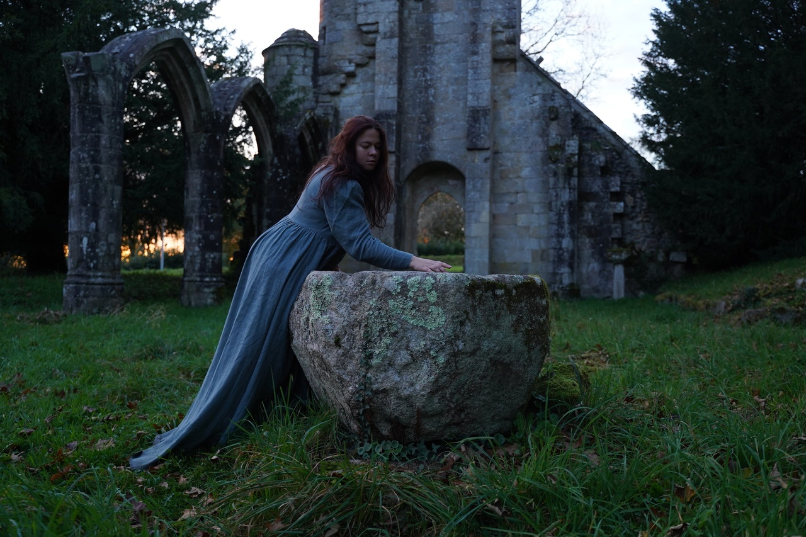
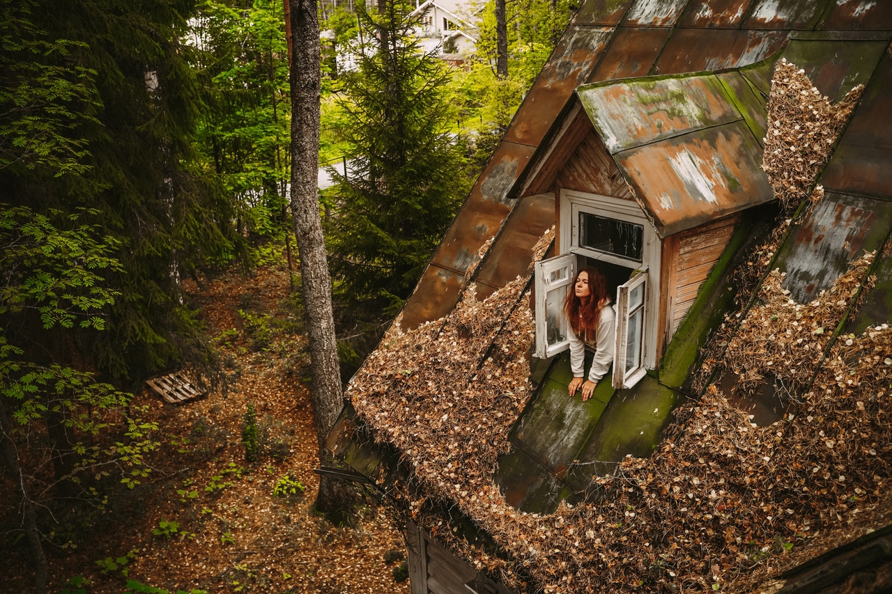
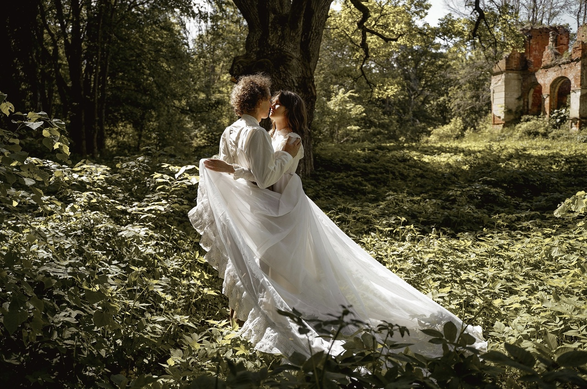

Доход от фотографии у Александры Мазур из Санкт-Петербурга был нулевым, клиенты были редкими и нецелевыми.
После прохождения курса доход увеличился до 6000 рублей в час, а количество клиентов выросло до 6-7 человек в месяц. Это дало возможность снять напряжение и сосредоточиться на повышении уровня мастерства, а также на развитии в любимом жанре.
— Саша, поделись, что было до курса, какой средний доход был в месяц? Сколько клиентов?
— Доход был нулевой, если честно. Клиенты были, но настолько редкие и абсолютно не целевые. И второй факт расстраивал даже больше первого.
— Какие сложности были во время обучения на нашем курсе? Насколько сложно было учиться? За сколько прошла обучение?
— Честно говоря, это было давно и я не очень хорошо помню уже подробности.
Сложностей никаких не было, потому что само обучение понятное, систематическое и даёт результат с первого же задания.
У меня не было сопротивления в прохождении, потому что мне оно было необходимо и я доверилась вам. Я дошла до рекламы и не стала делать дальше задания, потому что заказы и так пошли, а с большим количеством я не могла справиться.
— Какие сейчас действия делаешь для привлечения клиентов? Как часто пишешь посты? Запускаешь ли рекламу?
— Сейчас у меня перерыв в работе из за тяжёлой семейной трагедии.
Но с осени я планирую вернуться и буду делать все, в том числе и давать рекламу. Только более узко-направленную. Мне не хочется снимать все подряд, хотелось бы определённую аудиторию и стилистику, поэтому буду использовать все методы: посты, рекламу, коллаборации. Даже информацию о себе буду выдавать созвучную с контекстом моих съёмок. Поэтому буду переслушивать курс заново.
— А можешь поделиться, как изменилась жизнь, когда увеличился доход? Может что-то купила себе? Съездила в путешествие? Что-то смогла сделать, чего раньше не могла позволить себе?)
— Конечно!
Во-первых, я ушла с основной работы? Могу содержать себя, дочку, помогать родителям. А до недавнего времени содержала еще больную бабушку.
Да, я могу позволить отвезти ребёнка на море. А это сейчас вообще не дёшево)))
К сожалению, большего пока нет, но это из-за ситуации в семье и из-за того, что я очень круто сменила жанр съёмок и вектор стилистики. А целевую аудиторию пока не набрала.
— Давай разберем твою ту ситуацию - до/после, про смену вектора подробнее, расскажешь, хорошо?
— Про смену вектора сейчас расскажу, это очень интересная история.
Я же снимала просто девушек, непонятно где и как. Но меня очень тянуло к сказкам. Я сейчас даже найду сторисы, где я описываю свой путь, пришлю показать. И вот тогда я пришла к вам.
И у меня появилась возможность снимать много и более качественно, а главное – в той тематике, в которой мне нравилось.

Для меня это очень важно, что ты получаешь возможность фотографировать не просто все подряд, а в том ключе, который тебя вдохновляет.
Появилось больше заказов – стало больше денег. Я смогла купить платья, расширить гардероб, смогла ездить в более труднодоступные, но при этом невероятно красивые места, даже оплачивать что-то для стратегических съемок.
Тем самым, уровень мой рос и тогда для меня это было самое важное. Не столько деньги, сколько возможность повышать свой уровень и делать то, что хочется, а не то, что предлагают.
Самое главное, что у меня появилась возможность проявлять полную свободу в творчестве. Я могла сама организовать съёмку, могла доехать туда, куда общественный транспорт не ходит, могла сказать модели : "Тебе для образа нужен такой вот костюм, такая обувь, животное, локация. Это можно в аренду взять вот здесь". И они брали, платили за аренду и уровень итогового результата был намного выше. Это были уже сказочные истории с полным погружением. Многие подрядчики начали меня узнавать и давать свои вещи на мои творческие съёмки бесплатно. Это тоже был показатель для меня, что я расту.
И, конечно, мне платили за эти съёмки и я могла вкладываться в творчество. И у меня стали появляться постоянные клиенты. Люди возвращались ко мне и это было особенное чувство.
То есть лично для меня, на тот момент, было гораздо важнее не количество денег или клиентов, а возможность снимать то, что мне нравится.
Потом я стала снимать любовь. Это происходило постепенно и со временем это начало вытеснять костюмированные фотосессии. Мне все больше нравилось снимать настоящие чувства, а не постановочную нереальную картинку, пусть и красивую.
Тогда я пробовала снимать разные пары и как раз в этот период состоялась наша с вами фотосессия и я купила курс.

Я прям брала все пары подряд, у меня был очень загруженный сезон на свадьбы и лав стори, к концу которого я полностью выгорела. Да, вот как раз в конце сезона я прошла ваш курс и он мне вообще открыл окно в Европу так сказать, где я увидела коллег не из России и поняла, что можно снимать по-другому.
В общем, благодаря курсу у меня полностью поменялся стиль съёмок. Потому что я очень сильно выгорела. Не все мои пары любили друг друга. Когда я брала все подряд, то ко мне приходили люди, которые даже дрались между собой в день свадьбы. И это очень выматывало.
В общем, раньше я снимала все подряд, без какого либо стиля и почерка. Фото яркие, динамичные. Но не очень про меня.
Но даже в тот сезон я заработала около миллиона.
Ценник вырос с 3000 в час до 6000 рублей.
Клиентов стало сильно меньше, но зато статус этих людей был значительно выше. Стали приходить чиновники очень высокого ранга, писатели, крупные учёные, музыканты. Я заработала примерно столько же, но с количеством клиентов в два раза меньше.
— А теперь вот в цифрах можешь – до курса сколько съемок/клиентов, какой доход? После курса – сколько съемок или насколько ценник подняла?
— Сейчас, как два года, у меня, честно было мало клиентов. Моя бабушка слегла и была парализована и я за ней ухаживала, было не до работы. Потом заболел отец. За последние пол года я похоронила папу и бабушку, поэтому сил не было. Вот только сейчас прихожу в себя и буду пробовать снова вернуться в строй.
Я понимаю, что для многих показатель – это ценник и клиенты, их количество. Но для меня самое ценное, что курс дал мне дверь не только в любимую профессию, но и сделал из меня не просто ремесленника, а автора со своим стилем и набором компонентов, которым я верна, по которым меня узнают и которые полностью меня вдохновляют.
Я прихожу с работы физически уставшая, но абсолютно наполнена внутри.

В дополнение хочу сказать, что даже с тем небольшим количеством клиентов, а это 1-2 свадьбы в месяц мне хватает, чтобы содержать себя и ребёнка. Но важнее то, что мне не приходится себя насиловать. Поэтому, даже в самое тяжелое время для себя, я вообщем-то, счастливый человек.
А до этого никогда не чувствовала себя счастливой.
Так что для меня, как для личности, было три переломных момента: смерть отца, рождение ребёнка и курс от Евгении Брун.
— Саша, спасибо тебе огромное за ответы. Очень ценна твоя откровенность. Я рада, что сейчас ты чувствуешь себя счастливой. А за этим придут и клиенты и работа, когда ты будешь к ней готова!
— Да, я в этом уверена. Осенью начну и буду действовать. Теперь я точно знаю как)